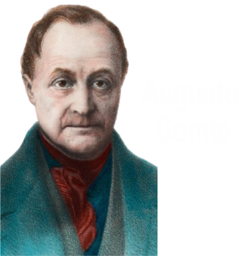
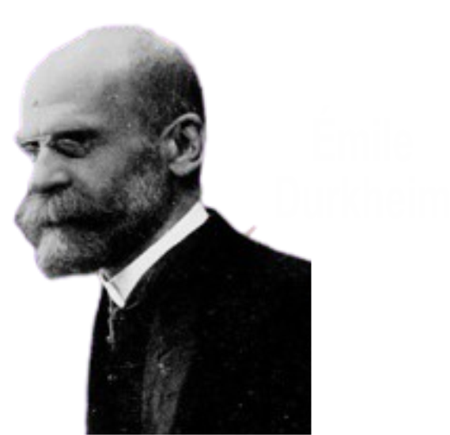
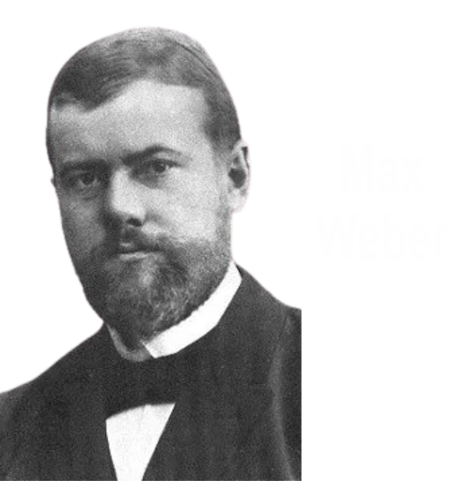

A Sociologia é a ciência que estuda a sociedade e os fenômenos
que nela ocorrem, sejam eles culturais, econômicos, religiosos.
Ela se ocupa basicamente de cinco elementos: a estrutura social,
os grupos sociais, a família, as classes sociais e os papéis que o
indivíduo ocupa em sociedade.
Situada dentro do conjunto das ciências humanas. O objetivo da
sociologia é estudar, entender e classificar as formações sociais,
as comunidades e os agrupamentos humanos, para que outras
ciências e técnicas possam apresentar propostas de intervenção
social que resultem em melhorias na sociedade. Nesse sentido,
educadores, médicos, psicólogos, engenheiros, arquitetos, urbanistas,
juristas, advogados, publicitários, jornalistas, economistas, enfim,
quase todos os profissionais e pesquisadores de quase todas as
áreas necessitam das teorias apresentadas pela sociologia.
A ideia de uma ciência voltada para o estudo das sociedades surgiu
no século XIX, tendo como mentor principal o filósofo francês
Augusto Comte (1798-1857). Comte entendia que os estudos sociais
deveriam ser pautados como os estudos das demais matérias das
ciências naturais. Seria por meio do método cientifico que as normas
e as regras gerais dos fenômenos sociais seriam entendidas, o que
nos daria o poder de intervir nos problemas sociais de forma a
resolvê-los e eliminá-los de nossa convivência.
Esse seria o papel da sociologia.

Foi um dos mais importantes filósofos e sociólogos franceses.


Foi primeiro a criar um método sociológico que distinguiu a sociologia das demais ciências
humanas.

Fundou um método de estudo sociológico baseado no que ele chamou de ação social e produziu estudos
profícuos para a compreensão da formação do capitalismo.
O que a sociologia estuda?
O sociólogo tem a missão de estudar a sociedade
como um todo organizado por pessoas em
comunidades. Os meios para isso são hoje os
mais variados, o que permite ao profissional em
questão tentar compreender vários aspectos
sociais, como violência, globalização, guerras,
consumo, expectativa de vida, organização das
cidades, exclusão social etc.
Os métodos para essa compreensão também são
variados. Como a sociologia é uma ciência, ela
precisa de garantias metodológicas para que o
seu trabalho seja confiável. Por isso, é necessário
que o sociólogo atente-se para padrões de
repetição dos fenômenos, a fim de estabelecer
um padrão de comportamento social. Além disso,
o sociólogo utiliza dados fornecidos por
entrevistas individuais com pessoas de um
mesmo grupo social ou de grupos diferentes e,
como ferramenta de comparação, utiliza um ramo
da matemática chamado estatística.

O objeto de estudo do sociólogo pode ser as diferentes organizações humanas como igrejas, empresas, escolas, hospitais, times esportivos, etc. Ou seja, todas as instituições sociais. Igualmente, analisa grupos culturais, a forma e o impacto da questão governamental em um determinado grupo. Assim, a Sociologia parte de um determinado conceito de sociedade para investigar sua estrutura social e as relações sociais neste meio.

A criação da Sociologia no Brasil ocorreu de maneira paralela ao seu desenvolvimento
na Europa, mas com os detalhes que marcam os países subdesenvolvidos.
No Brasil, o primeiro objetos de
estudo não poderiam deixar de
ser a própria formação da nação.
Como definir o brasileiro? Que
papel caberia ao Brasil no
"concerto das nações"?
A questão ocupou os pensadores
brasileiros como Manoel Bonfim
(1868-1932), Eduardo Prado (1860-1901),
Gilberto Freyre (1900-1987), Sérgio Buarque de Holanda (1902-1982) e outros.